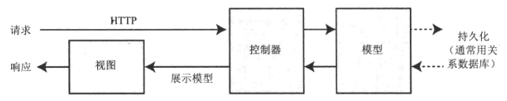
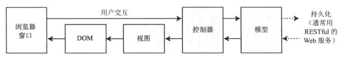

AngularJS入门笔记-2-理解AngularJS的优势
AngularJS并不能解决所有问题，了解并正确使用NG非常关键，在HTML文档每次加载的时候，NG会有许多工作要做，比如编译HTML元素，计算数据绑定，执行指令等。
同时优化的目标就是尽可能加大执行效率，这需要仔细考虑Web应用的类型，广义的Web类型分为回合式（传统的）和单页面。
回合式&单页面
所谓回合式，其实就是指传统的Web应用，由浏览器向服务器请求一个初始的HTML文档，用户交互（单击按钮、链接、提交表单）会触发事件，浏览器向服务器发送请求并收到服务器响应的一个新的HTML文档。
本质上，这类应用将浏览器作为HTML的解析器，所有的应用业务逻辑和数据都在服务器上，浏览器发出的其实是一系列无状态的HTTP请求，服务器处理这些请求并动态生成HTML。
这种方式对浏览器的要求比较小，能够最大限度支持客户端，但是也有缺点，即用户在浏览器加载完新HTML文档之前必须等待。
而当下多数使用Ajax的web应用，只是改变了一部分数据交互的方式，提高了带宽利用率，但是本质上还是回合制的，即跳转链接，请求新的HTML文档。
而单页面则不同，只在初始的HTML文档发给浏览器，而用户交互所需要的数据都是通过ajax获取，虽然数据还是存放在服务器端，但是不存在浏览器对整个HTML文档的重复的完整解析过程，即初始的HTML文档不会被再次加载或替换，仅仅只需要浏览器解析一些HTML片段。
而项目越复杂，单页面应用的优势越明显，Angularjs则以单页面应用和复杂的回合式应用见长，AngularJS作为一个框架，将复杂的逻辑和表现交互分离解耦，各行其职，而对于单元测试不那么重要而且需要立即得到结果的底复杂度Web用于适用于jquery，简而言之对于简单的项目，一般时候jquery即可。
客户端MVC模式
MVC最早是在70年代用于GUI应用程序的，而近年来，MVC模块被越来越多的用在了客户端开发中，用于降低Web开发的复杂性。
使用MVC模式的关键前提在于如何实现关注点分离，即应用程序中的数据模型与业务和展示逻辑解耦，在Web客户端开发中，这意味着将数据、操作数据的逻辑和显示数据的HTML元素相分离，结果就是得到一个更易开发、维护和测试的客户端应用。

MVC模式在服务器端的实现

MVC模式的AngularJS实现
从以上两个图片对比，可以看出，传统服务器的实现是从数据库中获取模型（数据），应用对来自浏览器的HTTP请求提供服务，也是回合式Web应用的基础。
而在AngularJS的实现中，客户端从服务器端获取数据，通常通过RESTful风格（一种请求的接口风格）的Web服务获取数据，在客户端实现中，控制器和视图的目标是对模型中的数据进行操作，从而执行对Dom的操作，创建或管理可与用户交互的HTML元素，这些交互也会被映射到控制器，这就构建了一个应用交互的闭环。
在客户端使用AngularJS这样的MVC框架，并不会与服务器端使用的MVC框架冲突，相反会分担一部分服务器端的复杂度，因为它将服务器端的一些工作转移到了客户端，使服务器能提供对更多客户端的支持。
理解模型
MVC中的M即模型，包含了用户操作和可见的数据，有两种广义的模型，视图模型，表示从控制器传到视图的数据；业务模型，包含业务领域的数据，以及在创建、存储、操作这些数据的操作，通常为模型逻辑。
什么是“业务”呢？
比如一个进销系统，业务领域就包括与进货销售相关的流程、业务模型就包括账目数据以及创建、存储、管理这些数据的逻辑。
又比如一个视频网站，业务领域就是视频数据，以及对这些视频创建、存储和操作的逻辑。
简而言之，模型应该：
- 包含业务数据
- 包含创建、管理和修改这些数据的逻辑（通过Web服务执行远程逻辑）
- 提供整洁API，合理暴露模型数据以及对应的操作
不应该：
- 暴露模型数据是如何获取或管理的细节（如数据在硬盘上的存储机制）
- 包含用户交互以及对模型进行转换修改的逻辑（这是控制器的职责）
- 包含将数据显示给用户的逻辑（这是视图的职责）
最好的业务模型应该包含获取和存储持久化数据的逻辑，包括CRUD操作。
理解控制器
控制器是数据模型和视图之间的渠道，控制器向作用域中添加业务逻辑（行为），而作用域是模型的子集。
控制器应该：
- 包含初始化作用所需的逻辑
- 包含视图所需的用于表示作用域中的数据的逻辑行为
- 包含更具用户交互来更新作用域所需的逻辑行为
不应该：
- 包含操作DOM的逻辑（这是视图的职责）
- 包含管理数据持久化的逻辑（这是模型的职责）
- 在作用域之外操作数据
理解视图数据
控制器可以创建视图数据，用于简化视图的定义。视图数据不会被持久化，要么仅仅只是存在用户某次交互中，要么就是综合业务模型数据的某几部分而成，比如通过ng-model获取的input元素中的用户输入值。
视图数据是通过控制器作用域来创建和访问的。
理解视图
AngularJS视图是通过HTML元素来定义的，而这些元素是通过使用数据绑定或者指令来进行增强或者生成的。AngularJS指令是这样视图变得非常灵活，也是HTML变为动态Web应用的基础。
视图应该： 包含将数据呈现给用户所需的逻辑和标记
不应该：
- 包含复杂逻辑（一般复杂逻辑放在控制器中，复杂与否可自行判断）
- 包含创建、存储或操作业务模型的逻辑
视图可以包含逻辑、但是应该尽量简单。若不加节制的视图中处理逻辑，会让整个应用变得难以测试和维护，推荐仅添加简单方法或表达式到视图中。
理解RESTful
那些HTTP方法具有无为性？
由于HTTP的特性，GET方法是具有无为性的，即对于该方法的响应应该只读取数据而不修改它，而浏览器重复发出GET请求而不会修改服务器端的状态。
什么是幂等，及幂等的HTTP方法？
即对于PUT和DELETE方法，多次发送同一个请求应该和只发送一次该请求具有相同的效果，例如删除一个用户的请求，第一次响应删除，但是后续请求就不用做任何事情。
而POST方法既不是具有无为性也不是幂等的。
常见问题
这里的问题常常不是代码编写的问题，而是设计的问题
逻辑位置错误
最常见的错误，将逻辑位置放错，破坏了MVC关注点的分离
- 将业务逻辑放到视图，而不是控制器中
- 将领域逻辑放到控制器，而不是模型中
- 在使用RESTful的服务时将数据存储逻辑放到客户端模型中
以上问题都是设计问题，而且需要过一段时间才会暴露出来，应用程序仍然能运行，但会变得难以维护和优化。第三种问题只有当存储被更换时才会出现。
将逻辑放到正确的位置需要经验，但使用单元测试将更早的找到问题，因为覆盖该逻辑所需要的测试是与MVC模式相对应的，若无法相容则说明设计逻辑有问题。
设计逻辑规则：
- 视图逻辑应该仅仅为显示准备数据，且永远不要修改模型
- 控制器逻辑永远不应该直接创建、更新或删除模型中的数据
- 客户端永远不应该直接访问数据存储